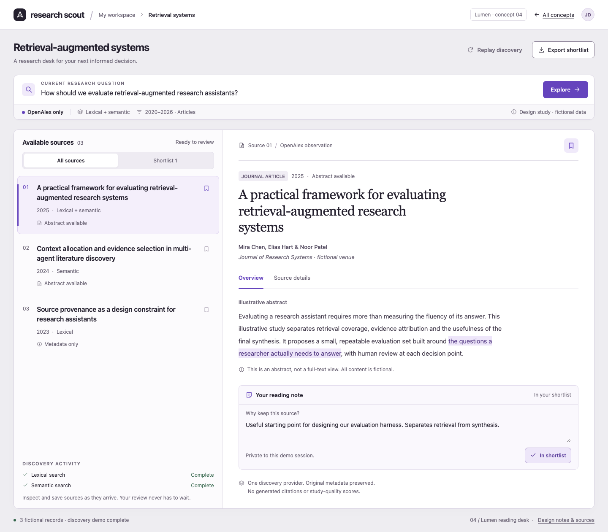
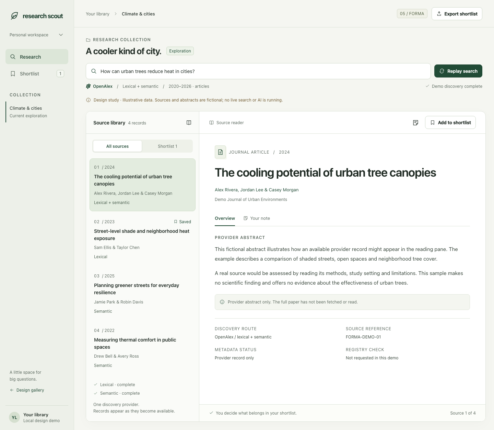
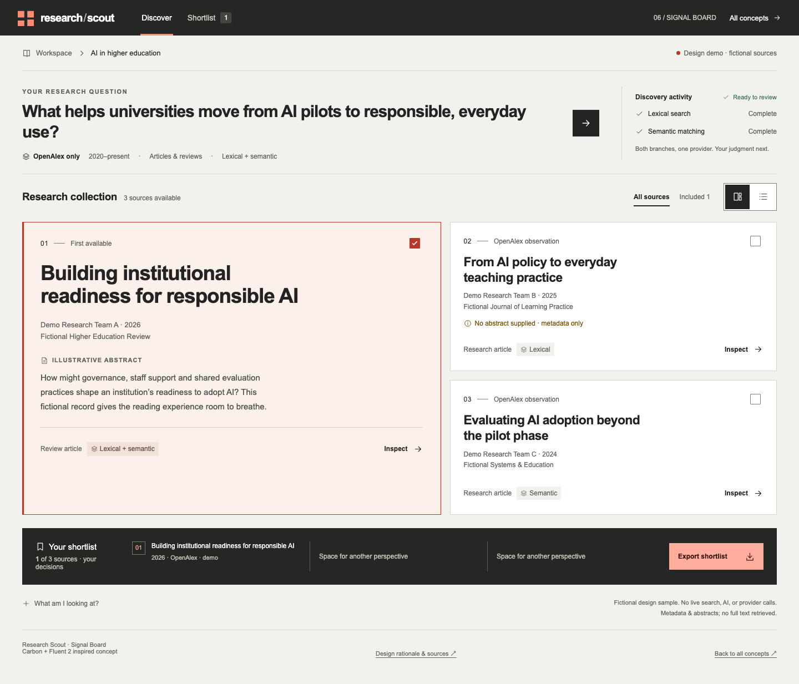

04Radix · shadcn/ui
Lumen
A precise two-column reading desk. An elegant source index and a generous reading sheet put inspection and personal notes directly in the workspace.
Mauve / violet / white
Explore Lumen ↗Three new research workspaces from independent designers. Explore a focused reading desk, a native-inspired library and a graphic source board—alongside the original three.
Six standalone HTML concepts, using illustrative records and local demo interactions. The new round explores Radix/shadcn, Apple/Spectrum and Carbon/Fluent references. No design is selected; the production application is unchanged.

04A precise two-column reading desk. An elegant source index and a generous reading sheet put inspection and personal notes directly in the workspace.

05A composed research library. Warm stone, forest accents and a native-inspired three-pane layout bring sources, reading and decisions into one coherent view.

06A graphic research collection. Deliberate grid alignment, graphite and coral distinguish the source canvas from a selected-source tray.
 01
01Material-inspired tonal surfaces, a bold blue question canvas and purposeful rounded forms. A familiar workspace with a more distinctive identity.
 02
02A reading-first research desk. Warm paper, ink, serif headlines and disciplined rules make source content feel central and the interface feel calm.
 03
03A dark research console with cool signals and compact information. Search progress, provenance and decisions stay legible without decorative charts.
The second round changes the working composition, with less emphasis on a large composer and more attention to source reading, inspection and decision-making. The design-system references inform each original concept; no framework has been installed or selected.
| Design choice | 04 · Lumen | 05 · Forma | 06 · Signal Board |
|---|---|---|---|
| Composition | Two-column reading desk; horizontal command bar | Three-pane library: navigation, source index, reader | Spatial source canvas and selected-source tray |
| Visual language | Neutral/mauve, quiet violet, typographic reading sheet | Warm stone, deep forest, native-inspired control hierarchy | Graphite, coral, structured grid and bold alignment |
| What to assess | Does the inline reader make research feel focused? | Is the library structure clear without crowding the source? | Does spatial browsing help you choose what to inspect? |